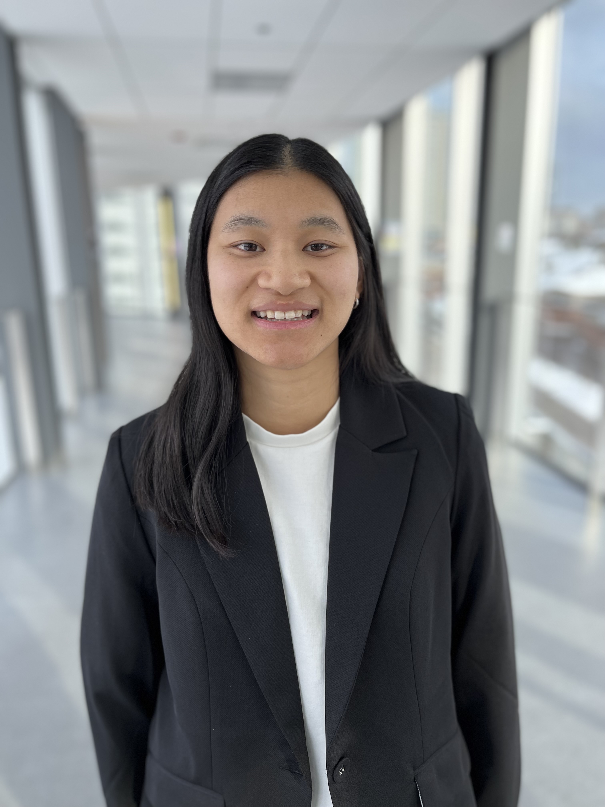

WHO AM I

I am a graduate of the undergraduate Chemical Engineering program at the University of Waterloo, and as of September 2026, I will be a student at McGill University pursuing a Masters of Engineering: Sustainability in Engineering and Design. My previous roles have given me valuable insight into the research world, process and manufacturing engineering, quality assurance, and developing and implementing sustainable policies and regulations. Throughout my degree, I gained international experience completing an 8-month international co-op in Hamburg, Germany, and a 6-month international exchange semester at Swansea University in Wales.
My primary area of interest is creating a more sustainable future. I am specifically interested in safe and sustainable product design, material recycling, with an interest in plastics, and sustainable processes to work towards a circular economy. Additionally, I have been increasingly more interested in policy work to ensure industries take action towards sustainability. I know I want to contribute to meaningful, inclusive, and impactful work in the STEM fields that focus on the environment and bettering society.
Please see my resume for more information about my skills and experience, as well as my contact information. I would love to hear from you!